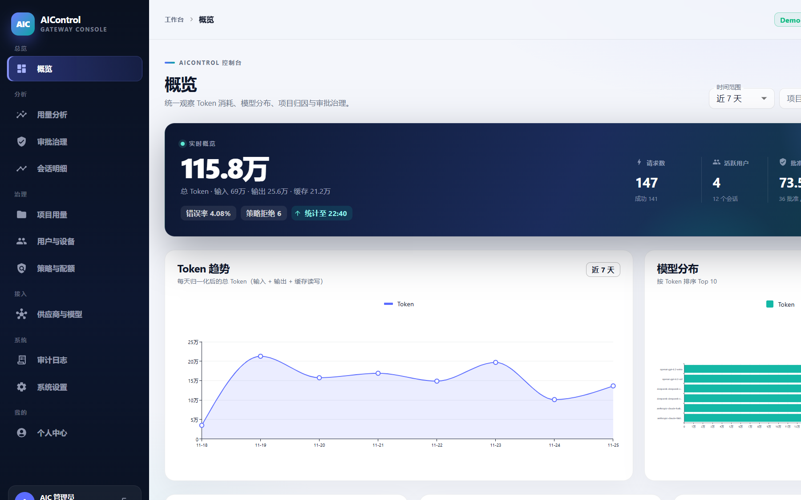
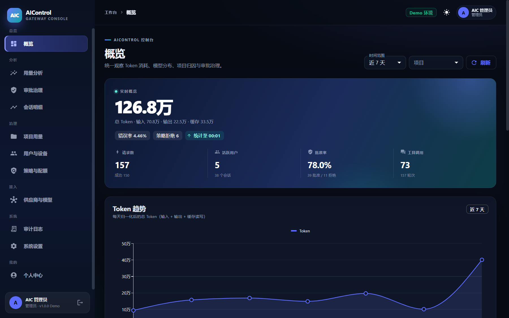
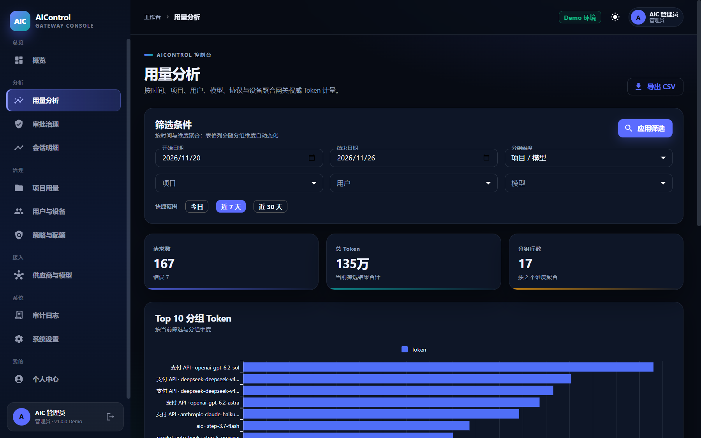
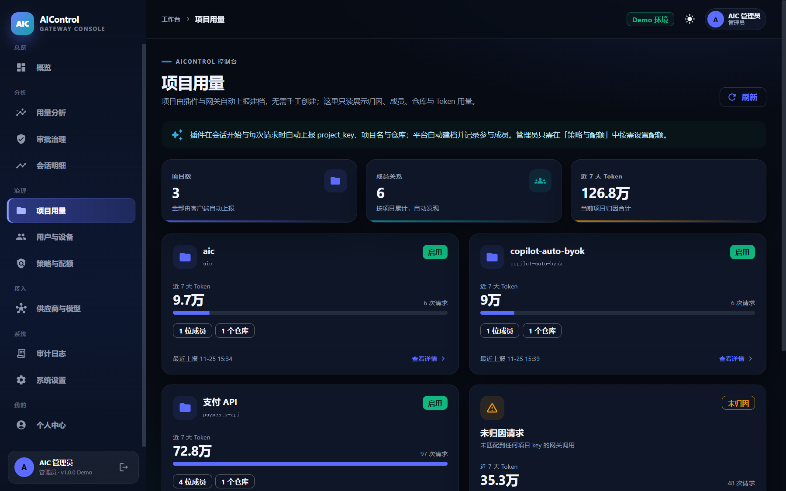
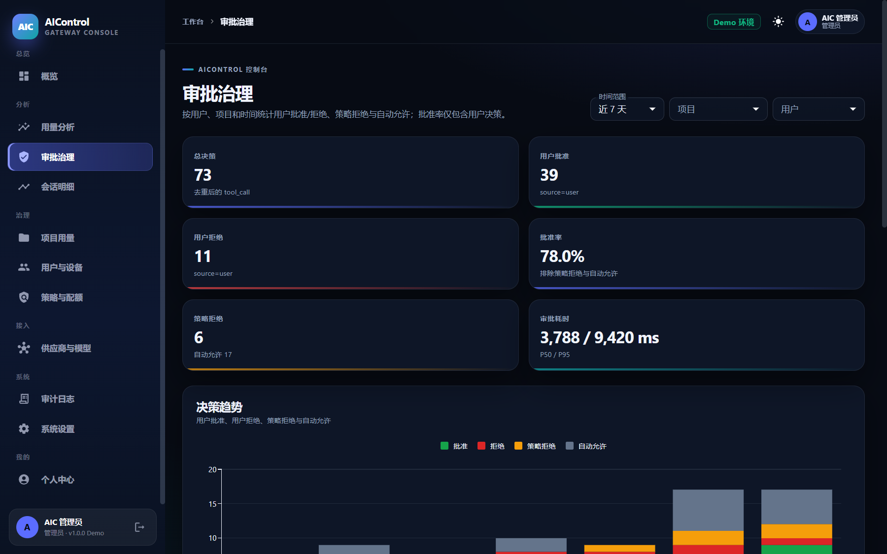
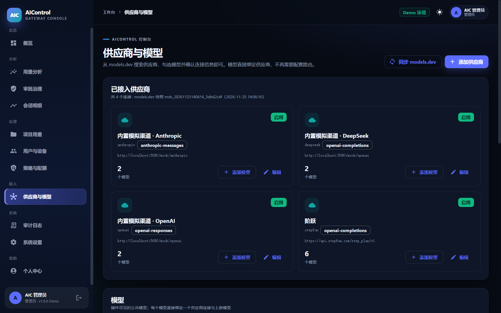
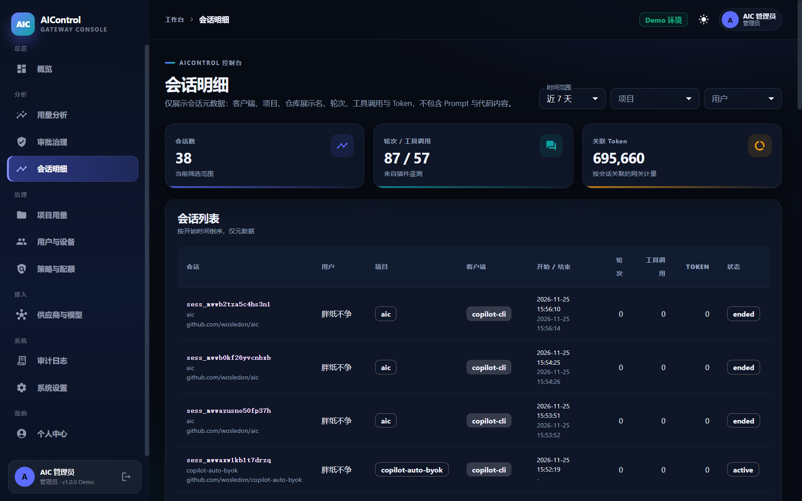
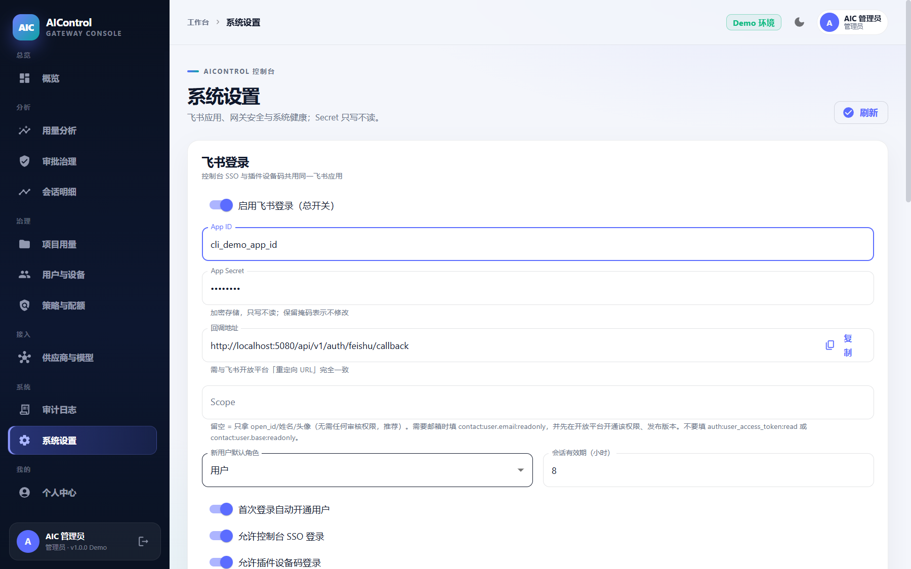
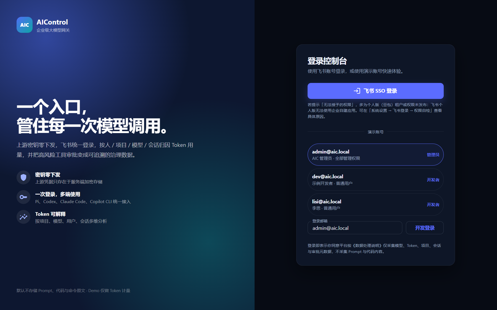

🧭
Keep the tools teams love
Pi, Codex CLI, Claude Code and GitHub Copilot CLI connect through native adapters — no forced IDE or workflow change.
Give Pi, Codex CLI, Claude Code and GitHub Copilot CLI a single governed endpoint. Short-lived tokens on the client, encrypted provider keys on the server, and token analytics plus approvals for every request.

API keys expose spend, not behavior. Locking everyone into a single tool is rarely the answer either — teams do their best work when they can choose the agent that fits the task.
Pi, Codex CLI, Claude Code and GitHub Copilot CLI connect through native adapters — no forced IDE or workflow change.
Every request is attributed to a user, project, session, model and client, with tool-call and approval metadata captured at the edge.
Console SSO and CLI device-code login issue short-lived tokens that can be revoked per person or device.
Everything an enterprise needs to observe, attribute and constrain coding-agent traffic — without changing the protocols your tools already speak.
Clients receive short-lived gateway tokens only; upstream base URLs and API keys stay encrypted server-side.
OpenAI Chat Completions / Responses, Anthropic Messages and Google Generative AI pass through unchanged.
Import from models.dev and bind each public model to exactly one upstream channel. No routing tables.
Input, output, cache-read and cache-write tokens attributed to user, project, session and model.
Console SSO and CLI device-code login share one Feishu app, with a dev login for local demos.
Risk-classified tool calls with approve / deny / policy decisions, aggregated per user, project and tool.
Plugins report project key, name and Git repository; projects and members are created on first sight.
Daily and monthly quotas, model allowlists, approval rules and rate-limit policies per user or project.
From real-time token trends to per-user approvals — every screen is backed by the same gateway telemetry.








Agents talk to the gateway through their native APIs. The gateway resolves the public model, applies policy, forwards once, and records usage from the upstream response.
Secrets are encrypted at rest; telemetry stores metadata only — never prompts, code or command text.
Requires .NET 10 SDK and Node.js 20+. SQLite and demo data are created automatically.
Starts the gateway, admin API and bundled console on port 5080.
dotnet run --project src/AIControl.Server --urls http://localhost:5080
Open the console and use the demo account, or configure Feishu SSO.
http://localhost:5080 admin@aic.local # demo login
Build the plugin package and expose aic / aic-copilot / aic-codex / aic-claude.
cd plugins/aic-gateway npm install && npm run build npm install -g .
Device-code login, choose a default model, then launch your agent.
aic login aic model set step-3.7-flash aic-copilot # or aic-codex / aic-claude
Windows: if global install needs a writable prefix, add --prefix "$env:APPDATA\npm". Pi loads the extension automatically after installation.
Each adapter keeps the client's native configuration model and adds only what AIControl needs.
piExtension-based provider, approval hooks and session telemetry.
aic-codexInjects a dedicated profile with gateway base URL and attribution headers.
aic-claudeSets Anthropic base URL / token and registers approval hooks.
aic-copilotBYOK provider with a fresh token per request and project headers.